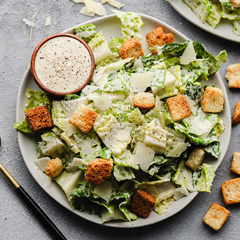
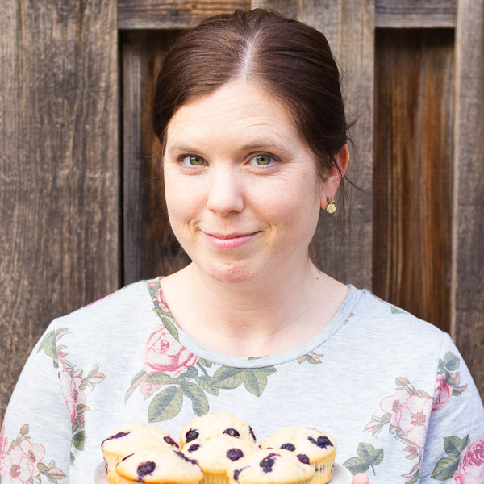
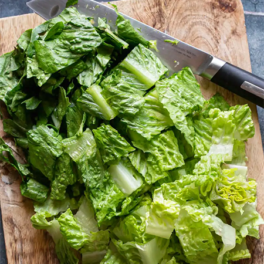
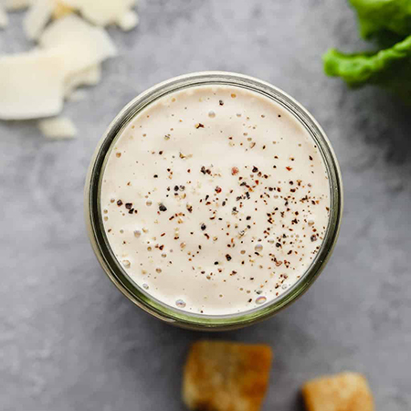
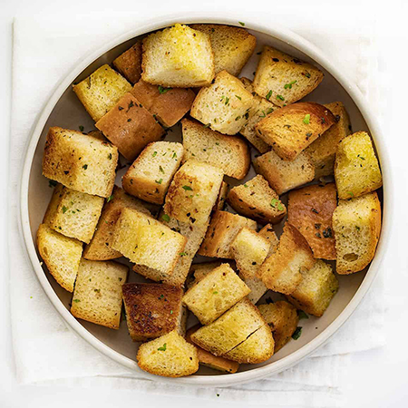
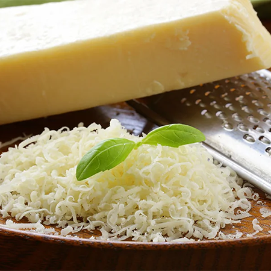
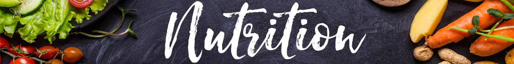

The Best Vegan Caesar Salad Recipe
Prep:
20 minutes
Total:
20 minutes
Servings:
6 servings

“This is the best vegan Caesar salad made with crispy romaine lettuce, croutons, shaved vegan parmesan, and the tastiest vegan Caesar dressing. ”
-Nora Taylor
This post may contain affiliate links. Read my full disclosure here.
Caesar salad is my absolute favorite green salad, and this vegan version is free of eggs and anchovies. This simple salad makes a yummy light meal on its own or bulk it up with some Vegan Chicken, Marinated Tofu, or Roasted Chickpeas. Vegan Caesar Salad is also the perfect side dish for your favorite main, like Vegan Lasagna or The Best Vegan Spaghetti.
Frequently asked questions
Is Caesar salad vegan?
No, it’s not vegan because it contains eggs and usually anchovies as well. It’s easy to make a plant based version though, and it tastes incredible!
How can I make it nut free?
To make a nut free and vegan Caesar salad, make the mayo based version of the dressing (in the Notes section of the dressing recipe) instead of using cashews.
Can I add more vegetables to salad?
I usually keep it simple, but feel free to add any other veggies you like! Avocado slices are good, as well as tomatoes, cucumbers and anything else you desire.
How long will the salad keep?
Once tossed with the dressing, it won’t keep for more than a few hours in my opinion because the lettuce will quickly get soft. You can prep the other ingredients (lettuce, dressing, parmesan) and keep them separately in the refrigerator for 5-6 days.
Ingredients

3 medium heads romaine washed & chopped

1 batch of Vegan Caesar Dressing

2 cups vegan croutons

1/2 cup shaved vegan parmesan or crumbles
Instructions
Step 1.
Wash & chop the lettuce
- I usually fill my clean sink with cold water, add the lettuce leaves and move them around with my hands to clean off debris, use my salad spinner to spin it dry, then chop.
Step 2.
Prepare dressing
- Make your vegan Caesar Dressing and set aside.
Step 3.
Toss and serve
- Add the chopped romaine to a large salad bowl or platter and toss with the dressing, as desired.
- You will probably not quite use all of it, and it's best to save a little for drizzling on top of each bowl.
- If desired, sprinkle with croutons, shaved parmesan, and fresh ground black pepper.
Notes
- Crispy chickpeas are a fantastic stand in for croutons.
- Feel free to add more vegetables, like sliced avocado, cucumbers, carrots, or tomatoes.
- I like Violife brand parmesan, which I use a peeler to make shaved parmesan.
- Use a mix of kale and romaine for variety.
- This makes 4-6 side salads or 2-3 main dish salads.

Serving: 1of 6 servings | Calories: 197kcal | Carbohydrates: 18g | Protein: 6g | Fat: 12g | Saturated Fat: 2g | Polyunsaturated Fat: 0.1g | Monounsaturated Fat: 0.3g | Sodium: 428mg | Potassium: 196mg | Fiber: 2g | Sugar: 2g | Vitamin A: 1222IU | Vitamin C: 3mg | Calcium: 28mg | Iron: 2mg